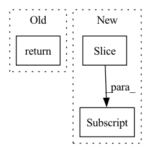

Pattern ID :36256
Before Change
// TODO: Calculate persistence tuples here. Not quite clear what
// the output of this function should be.
return None
// Helper function for doing the actual calculation of topological
// features of a graph.After Change
vertices, f_vertices, edges, f_edges
)
persistence_diagrams[filt_index, vi:vj] = persistence_diagram
// Make sure that the tensor is living on the proper device here;
// all subsequent operations can happen either on the CPU *or* onIn pattern: SUPERPATTERN
Frequency: 3
Non-data size: 3
Instances Fragment ID: 102677998
Project Name: aidos-lab/pytorch-topological
Commit Name: 100dc168045d1e240a74f9046ed1dc78062f2926
Time: 2022-12-27
Author: bastian@rieck.me
File Name: torch_topological/nn/graphs.py
M Class Name: TOGL
N Class Name: TOGL
M Method Name: compute_persistent_homology(8)
N Method Name: compute_persistent_homology(8)
M Parent Class: nn.Module
N Parent Class: nn.Module
M File Name: torch_topological/nn/graphs.py
N File Name: torch_topological/nn/graphs.py
M Start Line: 140
M End Line: 156
N Start Line: 141
N End Line: 165
Before Change
sin, cos = sinu_pos.unbind(dim = -2)
sin, cos = map(lambda t: repeat(t, "b n -> b (n j)", j = 2), (sin, cos))
qk = (qk * cos) + (rotate_every_two(qk) * sin)
return qk
// reformer lm
After Change
sin, cos = sinu_pos.unbind(dim = -2)
sin, cos = map(lambda t: repeat(t, "n d -> n (d j)", j = 2), (sin, cos))
seq_len = sin.shape[0]
qk, qk_pass = qk[:, :seq_len] , qk[:, seq_len:]
qk = (qk * cos) + (rotate_every_two(qk) * sin)
return torch.cat((qk, qk_pass), dim = 1)
Fragment ID: 102677999
Project Name: lucidrains/reformer-pytorch
Commit Name: 9f6ad0674567a521edbb07f8bfce68da43865487
Time: 2021-05-05
Author: lucidrains@gmail.com
File Name: reformer_pytorch/reformer_pytorch.py
M Class Name: AnonimousClass
N Class Name: AnonimousClass
M Method Name: apply_rotary_pos_emb(2)
N Method Name: apply_rotary_pos_emb(2)
M Parent Class:
N Parent Class:
M File Name: reformer_pytorch/reformer_pytorch.py
N File Name: reformer_pytorch/reformer_pytorch.py
M Start Line: 660
M End Line: 661
N Start Line: 660
N End Line: 663
Before Change
break
if matched:
return _all_gather_cpu(data)
else:
return _all_gather_gpu(data)
After Change
gathered = []
for size, tensor in zip(size_list, tensor_list):
buffer = tensor.cpu().numpy().tobytes()[:size]
gathered.append(nncore.loads(buffer))
return gathered
Fragment ID: 102678000
Project Name: yeliudev/nncore
Commit Name: c60692996f4316b5befe701efbc18a9ad7cc7ac1
Time: 2020-03-11
Author: goolhanrry@gmail.com
File Name: nncore/engine/comm.py
M Class Name: AnonimousClass
N Class Name: AnonimousClass
M Method Name: all_gather(2)
N Method Name: all_gather(1)
M Parent Class:
N Parent Class:
M File Name: nncore/engine/comm.py
N File Name: nncore/engine/comm.py
M Start Line: 47
M End Line: 78
N Start Line: 86
N End Line: 112